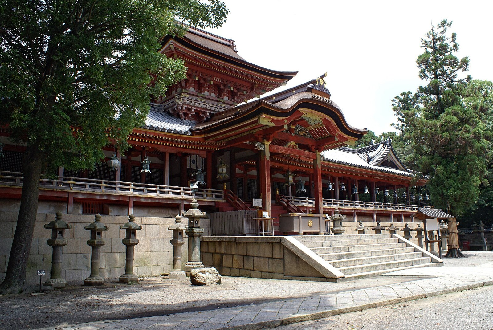
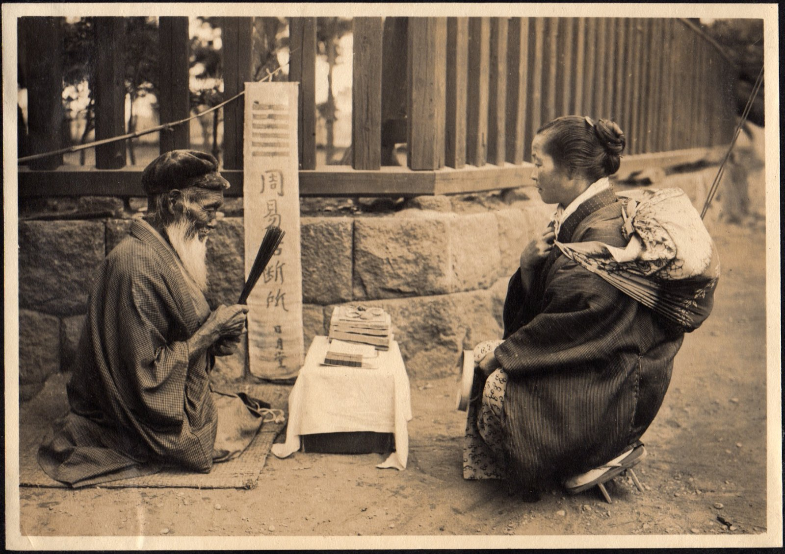
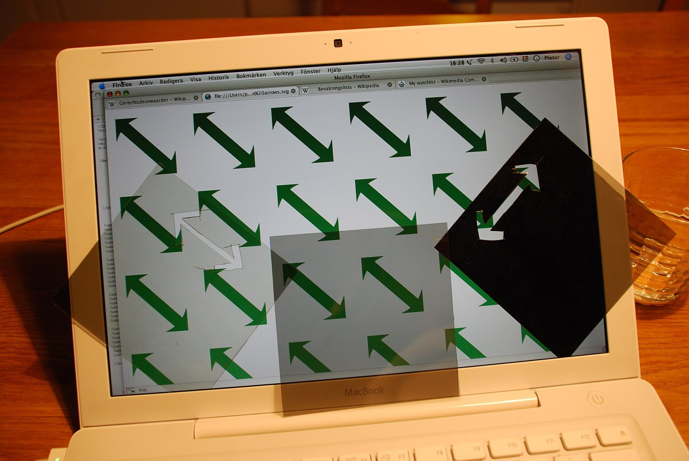

序封は、なぜ死後に切られたか
応永三十五年（1428）正月、四代将軍足利義持は死の床にあって、なお後継を名指さなかった。五代義量は三年前、数え十九で没している。三宝院満済や管領畠山満家らは評議を重ね、義持の弟四人――梶井門跡義承、大覚寺門跡義昭、相国寺の虎山永隆、青蓮院門跡義円――の名を籤にかけ、石清水八幡宮の神前で引かせた。籤は十七日に引かれ、封をしたまま置かれ、十八日、義持の死を待って開けられた。名の出たのは義円で、還俗して義教となる。

十七日に引かれ、十八日に開けられた。そのあいだの一日、答えはもう決まっていて、誰も知らなかっただけなのか。それとも、開けるまで決まっていなかったのか。
開封を延ばした理由として、こんな話が伝わる。義量の早世ののち、義持は同じ八幡の神前で籤を引き、男子が生まれるという答えを得ていた。弟から世継ぎを選ぶ籤を生きているうちに開ければ、八幡は「子が生まれる」と言い、同時に「弟が継ぐ」と言うことになる。神の答えが二つ並んで食い違うのを、義持は避けたのだという（籤引きを誰が言い出したかさえ、満済の日記と万里小路時房の『建内記』とでは書きぶりが違い、どこまで信じてよいかは決めにくい）。
二つの籤は、同じことを二度たずねたのではない。一つ目は「子が生まれるか」、二つ目は「弟の誰か」。義持が恐れたのは、問いを重ねることだった、と読める。
一初筮は告ぐ
易は偶然を呼び込む書である。四十九本の筮竹を二つに分け、一本を指に挟み、四本ずつ数えて余りを除く。これを三度くり返して、ようやく一本の爻が得られる。その易が、自分の経文の中に二度目の禁止を書き込んでいる。蒙卦の卦辞に、「初筮は告ぐ。再三すれば瀆る。瀆るれば則ち告げず」。はじめの占いには答える。同じことを二度三度と問うのは占いを汚すことで、汚せばもう答えない。

この一句を読むかぎり、易がより手間をかけているのは、偶然を一回に限ることのほうだ。一回に限るから、出た卦は引き直せない。凶が出た者は、その凶を抱えて帰る。
答えの出やすさにも偏りがある。筮竹の手順では、変わらない陰が 7/16、変わらない陽が 5/16、変わる陰が 1/16、変わる陽が 3/16。同じ易でも硬貨三枚で占えば 1/8 と 3/8 に変わるから、この重みは筮竹の数え方が持っている。講義の例題 5-1 の 2/3、1/6、1/6 は、測る道具を替えても変わらない。量子の重み |ca|² は、状態が持っている。
変わる爻が出たときは、その爻を反転させた卦（之卦）も合わせて読む。一回の筮が、いまの卦と、その行き先の卦を一度に告げる。量子力学の測定は、答えだけを告げる。測った直後の状態は出た値の固有関数で、そこから先の行き先は、測定ではなくシュレディンガー方程式が決める。だから講義は命題 V の帰結に「直後に」と添える。直後にもう一度測れば同じ値が出るが、時間がたてば、状態はもう動いているかもしれない。
二別の問いを挟む
縦向きの偏光板を二枚並べる。一枚目を通った光は、二枚目を一つ残らず通り抜ける。光子一個ずつで数えても同じで、一枚目を通った光子が二枚目で止められる確率は 0 である。ここで易と量子はすれ違う。易は二度目に答えることを拒む。偏光板は拒まない。ただ、一度目をそのまま写して返す。
その二枚のあいだに、四十五度傾けた板を差し込む。四十五度の板を通るのは、縦の光の半分。通った光を最後の縦の板に当てると、また半分しか残らない。cos²45° = 1/2 が二度かかり、三枚すべてを抜けるのは一枚目を通った光の四分の一になる。一枚目を通ったのだから縦だったはずの光子が、最後の縦の板で半分止められる。

四十五度の板にとって、縦か横かは問いの外にある。「斜めか」と問われて「斜め」と答えた光子は、その代わりに「縦」を手放す。一枚目の結果が間違っていたのではない。別の問いが、それを消したのである。
義持の恐れは、偏光板の最後の一枚に似ている。「子は生まれるか」と「弟の誰が継ぐか」は、同時には答えられない問いだったのかもしれない。義持は二つ目の封を、自分がもう何も確かめなくてよくなる時まで、切らせなかった。
結封の中には、目が無い
丁半の壺の中では、サイコロの目はもう出ている。壺を伏せた瞬間に決まっていて、開ける前は誰も知らないだけだ。古典の世界では、封の中の籤もこの壺と同じである。量子の測定に固有なのは、封の中にまだ目が無いことだ。測る前の状態は重ね合わせ Σ caψa で、そこには「縦」とも「斜め」とも書かれていない。書かれているのは、それぞれの目の重み |ca|² だけである。一度目の測定が値を作り、二度目はそれを写す。
1926年12月4日、アインシュタインはボルンに宛てて、この理論は多くをもたらすが「老人（des Alten）の秘密」にはほとんど近づけない、と書き、「いずれにせよ私は、あの方がサイコロを振らないと確信している」と続けた（筆者訳）。九年後の1935年、ポドルスキー、ローゼンとの共著論文で彼が問うたのは、量子力学による物理的実在の記述は完全と見なせるか、だった。彼が引っかかり続けたのは、偶然よりも、測る前の値について理論が黙っていることである。
封の中の答えは、いつ決まったのか。量子力学の講義は、この問いに答えずに先へ進む。命題 V は「いつ」も「何が」も言わない。封の一日は、その黙っているところを、問いの形で見せる。
籤は、開けるまでは無く、開けてからは戻らない。
本棚このコラムの書架
参照した本 ── 本文が依拠した原典
- 『易経』蒙卦 卦辞 ―「初筮告、再三瀆、瀆則不告」。訓読は通行の読みによる
- A. Einstein, M. Born, Briefwechsel 1916–1955（ボルン宛書簡、1926年12月4日） ―"Die Theorie liefert viel, aber dem Geheimnis des Alten bringt sie uns kaum näher. Jedenfalls bin ich überzeugt, daß der nicht würfelt."
- A. Einstein, B. Podolsky, N. Rosen, "Can Quantum-Mechanical Description of Physical Reality Be Considered Complete?", Phys. Rev. 47, 777 1935結の「完全と見なせるか」
※書簡と『満済准后日記』『建内記』は通読していない。書簡の文言は引用を載せた解説・辞典類で、籤引きの経緯は日本語版 Wikipedia「足利義教」（同記事が挙げる両日記の記述）で確認した。
参考図書 ── さらに読むために
- 今谷明『籤引き将軍足利義教』 講談社選書メチエ, 2003籤による選出から、義教の専制と嘉吉の変までを一冊で追える（本コラムの筆者は未読。書誌は版元で確認）
図版の出典
- 扉：「足利義教像」（妙興寺蔵）：File:Ashikaga Yoshinori cropped.jpg（Public domain。左右に地の色の余白を足して横長にした）
- 序：石清水八幡宮の楼門：File:Iwashimizu hachimangu02s3200.jpg（663highland、CC BY 2.5。縮小のみ）
- 一：路上の易者：File:Fortune Teller on the street of Japan (1914 by Elstner Hilton).jpg（CC BY 2.0。縮小のみ）
- 二：液晶画面と偏光シート：File:LCD polarization.JPG（Pieter Kuiper、Public domain。縮小のみ）
- 二：偏光板の図：本コラムで作成（理想的な偏光板として計算）


事実確認に用いた資料
- 足利義教（Wikipedia 日本語版）：籤引きの日付（17日に引き18日に開封）、候補4人、義持の先の籤の話（注）、『満済准后日記』と『建内記』の記述の違い
- 講談社：今谷明『籤引き将軍足利義教』：書誌
- I Ching divination（Wikipedia）、russellcottrell.com：筮竹法と硬貨法の確率
- ボルン宛書簡（1926年12月4日）の原文：Spektrum der Wissenschaft ほかの引用で照合